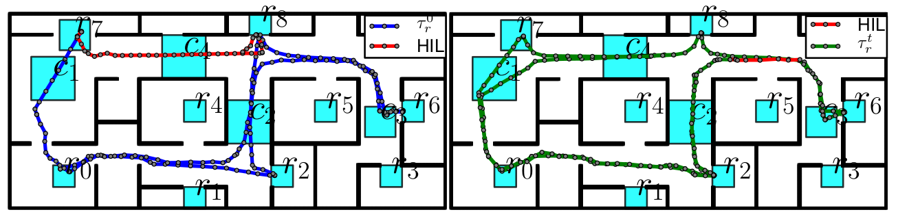
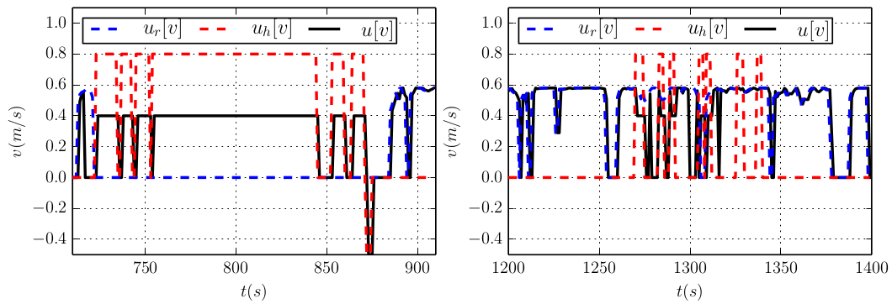
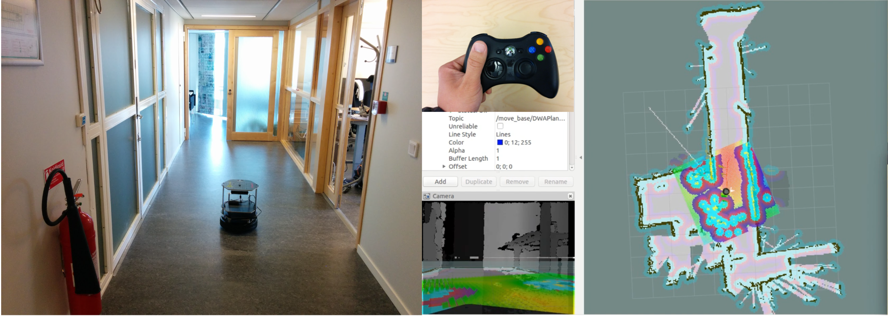

Meng's Software (HIL_Mix_Initiative)
HIL_Mix_Initiative
Human-in-the-loop mix initiative control under temporal tasks
Download at GitHub
Comments and contributions are most welcome!
Description:
This package contains the implementation of the mix-initiative control of a single robot under temporal tasks. The human operator can directly modify the navigation input of the robot and assign new tasks to the robot during run time. The workspace is assumed to be only partially-known and possibly dynamic. More importantly, via this interaction, the robot can learn the human preference for the parameters used in the plan synthesis.Features:
Human operator can influence the ‘‘cmd_vel" control velocities directly whenever needed:
to guide the robot through unknown area of the workspace,
to show the preferred path.
Safety is ensured for all time by the mix-initiative controller, for all possible human inputs.
Human can assign contingent short-term tasks during run time, which the robot will accommodate within the given deadline.
Given the past inputs from the human, the robot could learn the preferred value of the parameters used in the plan synthesis, with inverse reinforcement learning (IRL) algorithms.
Simulation
Follow the hil_mix_planner_tiago.py to simulate TIAGo robot
Human-in-the-loop simulation.
|  |
 |
|  |
Experiment
Follow the hil_mix_planner_turtlebot.py to control the turtlebot in an office environment.
Human-in-the-loop experiment.
Demonstration. [Video]
|  |